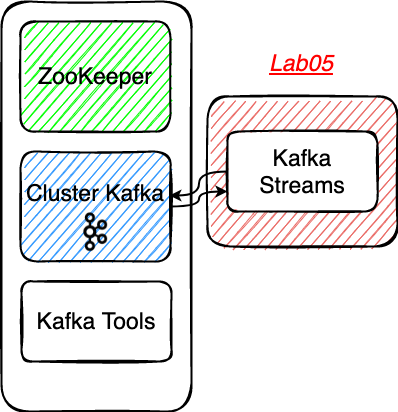
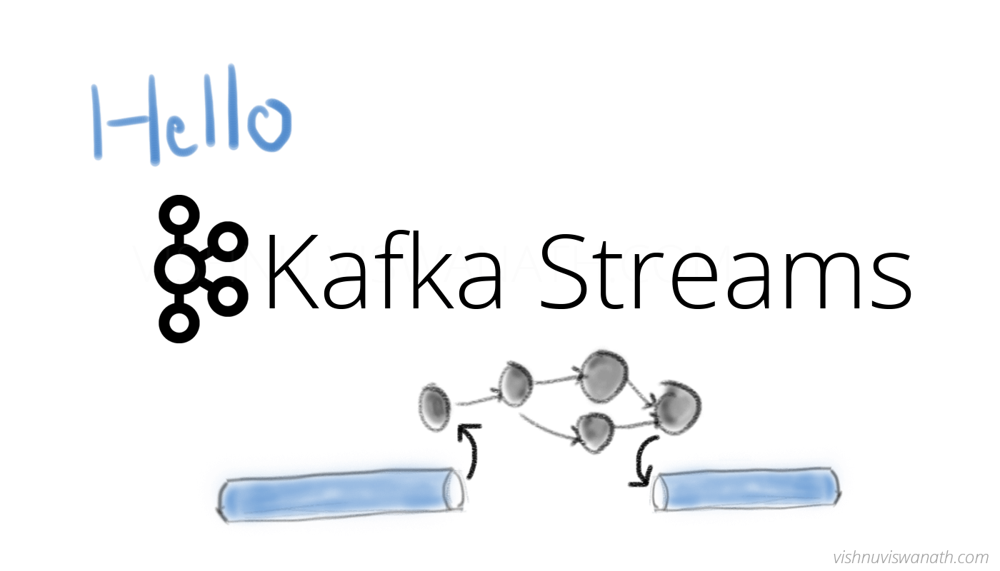

# Lab05 - Kafka Streams
# Rappel

# Kafka Streams
Kafka Streams est la bibliothèque de stream processing temps réel proposée par Apache Kafka. Elle permet la transformation à la volée de flux continus avec de faibles latences. Elle offre plusieurs types de transformations ( filtrage, agrégations, jointures etc).
Il est possible de créer des applications et des microservices orientés streaming d'événements en
Java Vanillamais également viaSpring Boot.Les données d'entrées et de sorties sont stockées au sein du cluster Kafka.
Une application Kafka Streams est au minimum constituée d'un producer (données en sorties) et d'un consumer (données en entrées).

- Kafka Streams est sous licence Apache 2.0
# Préparer le projet et les topics Kafka
⚠️ Checkout de la branche
step05⚠️.Se placer dans le répertoire
Lab05-kstreamExplorer le projet Spring Boot
Lab05-kstream- La configuration présente dans le fichier
application.properties - Le
StreamBuilder
- La configuration présente dans le fichier
Créer les topics
vehicle-positions-filtered-avro&vehicle-positions-light-avroen CLI.
⚠️ Pensez à être présent dans le conteneur
tools
docker exec -it tools bash
kafka-topics --if-not-exists --bootstrap-server kafka:9092 --create --topic vehicle-positions-filtered-avro --replication-factor 1 --partitions 1
kafka-topics --if-not-exists --bootstrap-server kafka:9092 --create --topic vehicle-positions-light-avro --replication-factor 1 --partitions 1
# Un peu de code
Au sein de la classe
VPKStreamnous souhaitons réaliser deux opérations via des Streams :Compléter le code dans la méthode
startFilterStream()pour réaliser un filtrage des records sur le champ oper afin de ne conserver que les records spécifiques à l'opérateur 22 (Nobina Finland Oy). Utilisez le topic de sortie suivantvehicle-positions-filtered-avro. Ce dernier ne doit contenir que des records spécifiques à l'opérateur 22.Compléter le code dans la méthode
startLightMappingStream()pour réaliser un mapping des données sur le typeLightPositionValueUtiliser le topic de sortie suivantvehicle-positions-filtered-avro. Ce dernier ne doit contenir que des records spécifiques à l'opérateur 22.N'hésitez pas à parcourir l'ensemble des méthodes présentes dans la classe
KStreamafin d'avoir une vue d'ensemble des possibilités offertes par cette dernière.Au démarrage de l'application les topologies de vos streams sont affichées dans les logs, vous pouvez utiliser la web app suivante : https://zz85.github.io/kafka-streams-viz/ (opens new window)) afin de simplifier leurs représentations.
Topology du stream décrit dans la méthode
startFilterStream()
com.zenika.kafka.kstream.VPKStream : Topologies:
Sub-topology: 0
Source: KSTREAM-SOURCE-0000000000 (topics: vehicle-positions-avro)
--> KSTREAM-FILTER-0000000001
Processor: KSTREAM-FILTER-0000000001 (stores: [])
--> KSTREAM-SINK-0000000002
<-- KSTREAM-SOURCE-0000000000
Sink: KSTREAM-SINK-0000000002 (topic: vehicle-positions-filtered-avro)
<-- KSTREAM-FILTER-0000000001
Topology du stream décrit dans la méthode
startLightMappingStream()
com.zenika.kafka.kstream.VPKStream : Topologies:
Sub-topology: 0
Source: KSTREAM-SOURCE-0000000000 (topics: vehicle-positions-avro)
--> KSTREAM-MAPVALUES-0000000001
Processor: KSTREAM-MAPVALUES-0000000001 (stores: [])
--> KSTREAM-SINK-0000000002
<-- KSTREAM-SOURCE-0000000000
Sink: KSTREAM-SINK-0000000002 (topic: vehicle-positions-light-avro)
<-- KSTREAM-MAPVALUES-0000000001
# Démarrer votre application en local
- Il s'agit d'un projet Maven qui dispose d'un wrapper
mvnwet du pluginspring-boot-maven-plugin, vous pouvez démarrer votre application spring en local à l'aide de la commande suivante :
Se placer dans le bon répertoire
Lab05-kstream
./mvnw spring-boot:run
- Visualiser les modifications des records dans AKHQ: http://akhq:8080/ (opens new window)
# Packager votre application avec Docker
- Pour builder et démarrer le conteneur
Se placer dans le bon répertoire
Lab05-kstream
docker build -t vp-kstream .
docker run --name vp-kstream --network=tz-kafka-network -d vp-kstream
# Solution
Vous vous doutez que pour disposer des solutions de la step05, il vous suffit de️ checkout la branche step06 😊